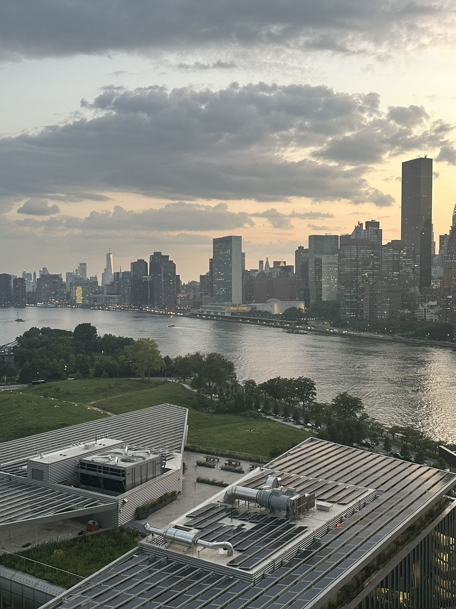

{% include navbar.html %} {% include switch.html %}
{{ page.title }}
{% for project in site.pages %} {% if project.path contains 'details/' and project.category == page.category %}

{{ project.title }}
{% endif %} {% endfor %}
{% include top-button.html %}